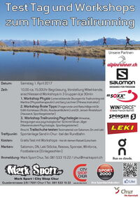

Trailrunning Day
Chur

Samstag, 01. April
Neuheiten zu Ausrüstung, Schuhtest, Workshop Trailrunning,
- Trailschuhe testen
Mark – Sport und Salomon stellen Testmaterial zur Verfügung
- Workshop Physio
Unterstützende Übungen für Trailrunning mit
Martina (Physiotherapeutin) und Gary Lechner (Fitness Instruktor)
- Workshop Ärzte Tipps
Fragerunde und Ratschläge mit
Dr. Edith Kortekaas (Ärztin, Ausdauerläuferin)
Dr. Jeroen Amelsfoort (Hausarzt, Sportbegeisterter)
- Workshop Trailrunning und Psychologie
Hinweise, Anregungen aus psychologischer Sicht mit
Silvan Jäger (Masterstudent Psychologie, Sportbegeisterter)
Treffpunkt: Sportanlage Sand bei der Rundbahn
Programm: 11.00 Uhr Begrüssung, Vorstellung Mitwirkende - Workshop in 3 Gruppen je 20 Min.
ab 12.30 Uhr Materialvorstellung und Trailschuh-Test
Material:
Salomon Schuhe, Bekleidung, ON Schuhe, Resoxx Socken, Winforce, SportlernahrungLeki Stöcke, Einlegesohlen Foot Balance
Kosten: Gratis Test, Informationen, Workshop, Beratung